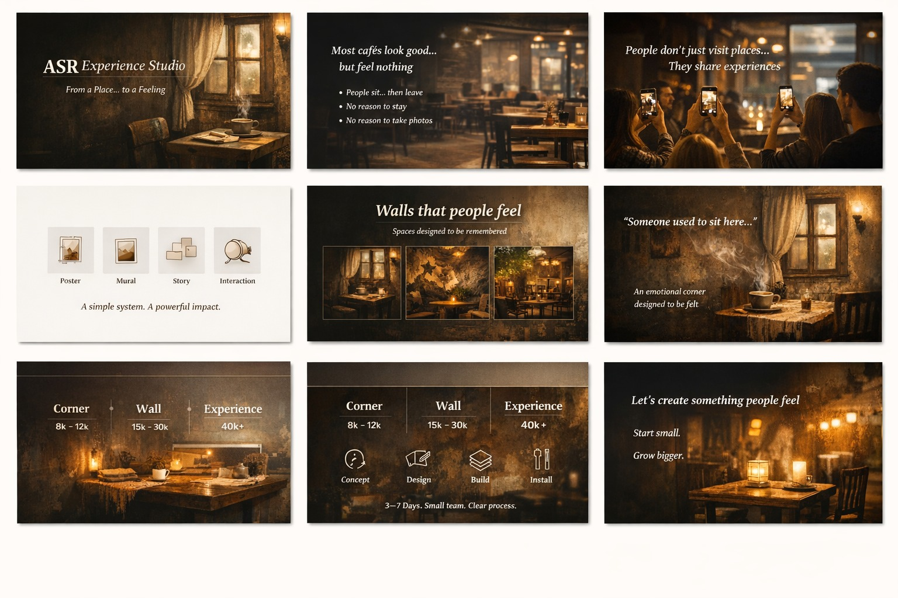
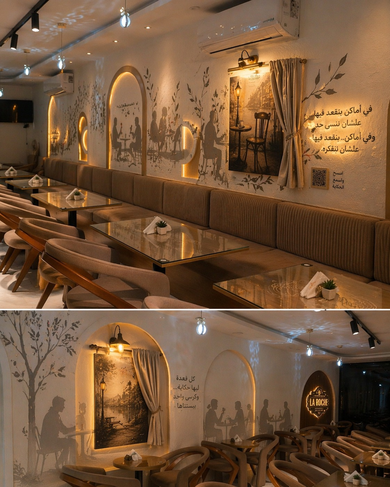
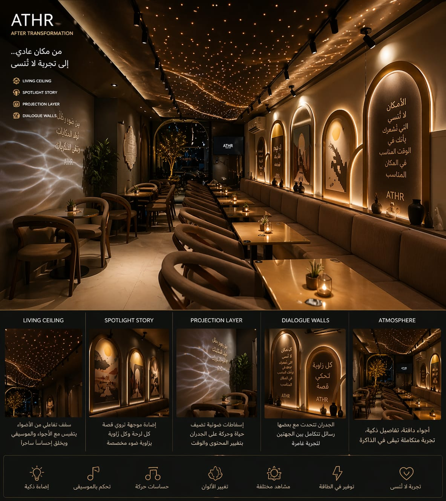
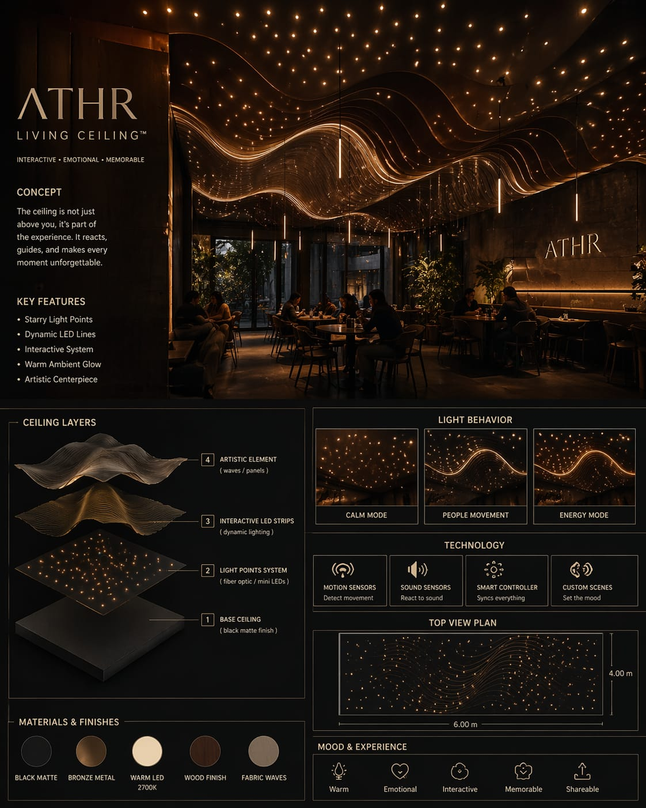
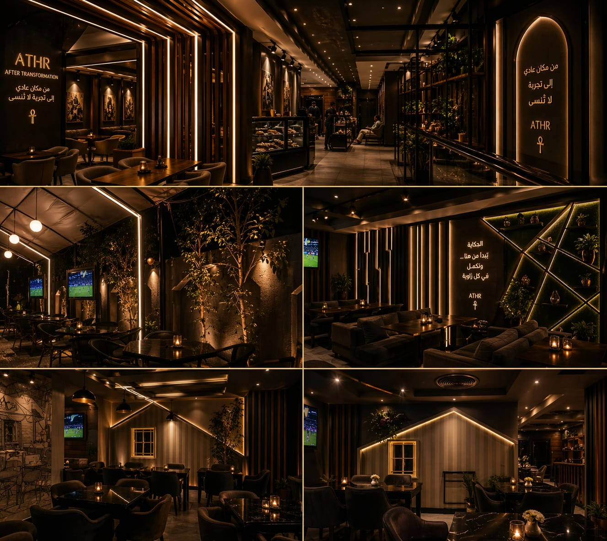
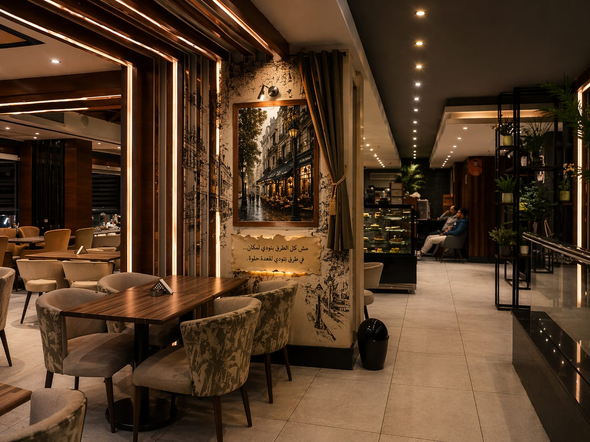
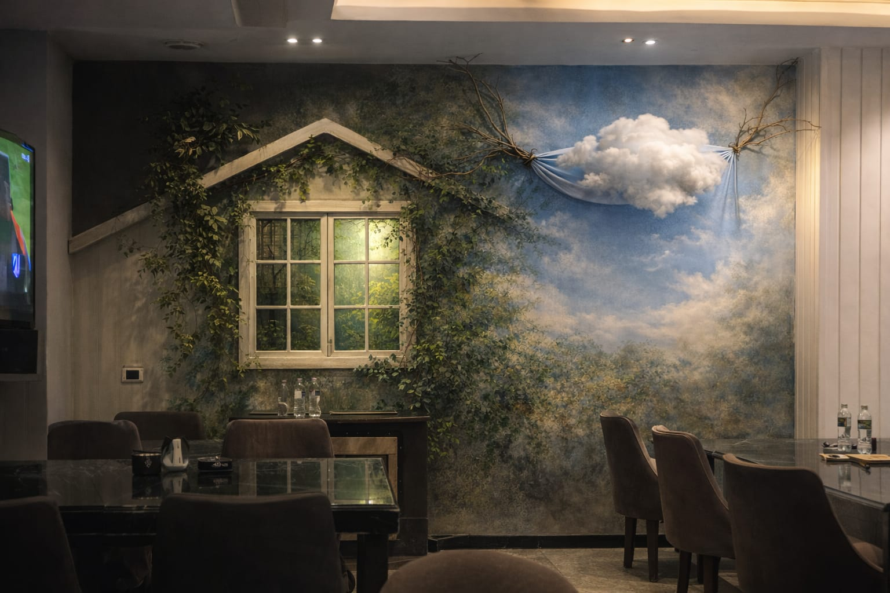
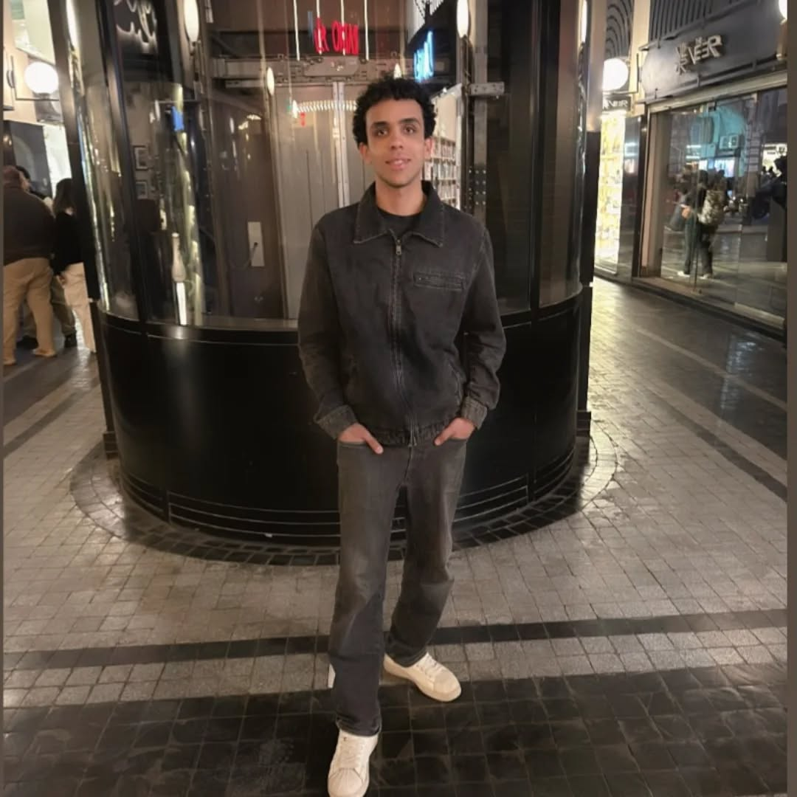

La Roche
Window to the Sky
A neutral wall turned into a contemplative emotional anchor that redefines the seating zone.
We design emotional spatial identities for cafés, restaurants, and hospitality spaces — through story-led walls, cinematic lighting, interactive moments, and memory-driven atmosphere.


This is not design.



Each intervention is designed to shift guest behavior and emotional recall while respecting existing architecture.
A neutral wall turned into a contemplative emotional anchor that redefines the seating zone.

A pass-through edge became a story-led corner where visual energy gathers and guests pause.

Subtle layering of line, light, and composition transformed a clean wall into memorable identity.
Stable, touch-friendly comparisons with aligned image behavior across every project.
Before: visually clean but emotionally neutral. After: story, light, and atmosphere create a memory anchor.
Before: visually clean but emotionally neutral. After: story, light, and atmosphere create a memory anchor.
Before: visually clean but emotionally neutral. After: story, light, and atmosphere create a memory anchor.
Responsive ceiling light systems that make guests look up, record, and remember.
Walls that visually respond to each other through story, light, and composition.
Directed lighting that guides attention to posters, murals, and emotional anchors.
Subtle projection mapping for motion, story, and atmosphere without looking cheap.
A compact transformation zone designed to become the most photographed part of the café.
Poster + Mural + Story + Interaction working as one experience.
One focused zone, poster/mural/story/lighting direction.
Full emotional wall direction with layered story and lighting.
Ceiling-based interactive atmosphere concept.
Complete space direction: walls, ceiling, interaction, lighting, story, and installation plan.
Not sure where to start? Send your café photos.
ATHR will generate a first visual direction — not as a final design, but as a starting point for a curated concept.
Ready when you are.

ATHR was built from one belief:
a space should not only look good — it should leave something behind.
Every ATHR project starts with a question:
What should guests feel in the first ten seconds, and what should stay with them after they leave?
For cafés, restaurants, and hospitality spaces that want a stronger identity people feel, photograph, and remember.